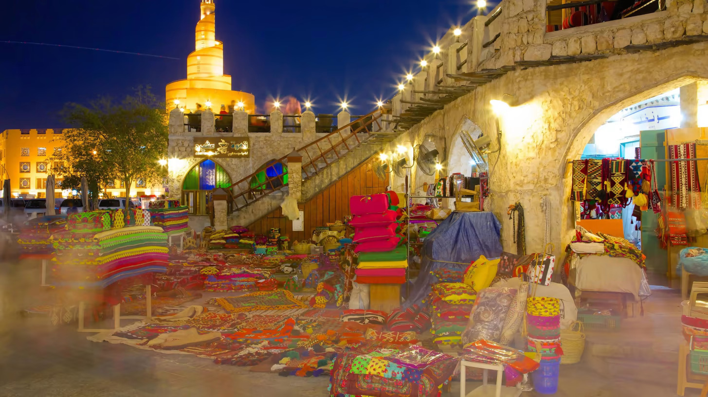

Dos dias 20 de novembro a 18 de dezembro, ocorre a Copa do Mundo FIFA 2022, onde 32 países irão disputar para ganhar o troféu mais desejado do mundo do futebol.
Os jogos começam no dia 21 de novembro, no estádio Al Thumama, com Senegal x Holanda, às 13h. Porém, a cerimônia de abertura deve ser em Catar x Equador, às 13h. A fase de grupos vai até o dia 2 de dezembro, sempre com quatro jogos por dia. A final é no dia 18 de dezembro.
Veja a programação dos jogosCatar
O Catar está se preparando para fazer história ao sediar não apenas sua primeira Copa do Mundo da FIFA™, mas a primeira a ser realizada no Oriente Médio. E a península promete produzir uma Copa do Mundo como nenhuma outra.
Será a menor nação de todos os tempos a sediar as finais globais, por exemplo, permitindo que os visitantes naveguem pelo país com facilidade – e até planejem assistir a várias partidas no mesmo dia. Adicione à mistura a tradicional hospitalidade árabe e as condições climáticas de inverno ideais para assistir e jogar o belo jogo, e a Copa do Mundo do Catar promete ser incrível.
A península do Catar compartilha sua única fronteira terrestre com a Arábia Saudita, embora Bahrein e os Emirados Árabes Unidos possam ser encontrados próximos ao noroeste e sudeste, respectivamente. Está bem acostumado a receber hóspedes estrangeiros, com uma vibrante comunidade de expatriados representando 80% de sua população. A língua oficial do país é o árabe, mas o inglês também é comumente falado.
O Qatar também passou os últimos anos construindo algumas das instalações esportivas mais ecológicas e arquitetônicamente avançadas já vistas. Tudo será mostrado ao mundo quando o maior show da terra finalmente chegar ao Oriente Médio.
De passeios turísticos e passeios pela natureza que cobrem todos os aspectos da vida local a oportunidades ilimitadas de compras, o Catar oferece aos visitantes uma ampla variedade de atividades, com algo para todos. A Copa do Mundo da FIFA Qatar 2022™, sem dúvida, proporcionará aos fãs de futebol de todos os lugares a chance de desfrutar de uma experiência única neste país do Golfo.
Resorts e praias
O Catar tem muitos resorts maravilhosos onde as pessoas podem relaxar e fugir da agitação da vida cotidiana. Estes incluem o Sealine Beach Resort, uma das melhores faixas costeiras perto da capital. Os visitantes também podem passar o tempo no Al Ghariya Resort à beira-mar, onde há muitas áreas para caminhadas como o Doha Corniche, um calçadão à beira-mar que se estende por vários quilômetros ao longo da Baía de Doha, na capital do Catar.
Locais históricos
Os amantes da arqueologia e da antiguidade podem ver muitos locais históricos que contam a história do passado distante do Catar, como o patrimônio mundial da UNESCO Al Zubarah e seu forte único. Há também o Museu de Arte Islâmica, Katara Cultural Village e Souq Waqif, todos entre as atrações turísticas mais populares do Qatar. O país também abriga vários fortes antigos que foram usados como instalações militares ou civis, como o Forte de Doha, as Torres Barzan e o Forte Umm Salal.
Aventuras no deserto e dunas
Além das praias e ilhas espetaculares, o Catar também tem um belo deserto e terreno rochoso. Os visitantes podem desfrutar de passeios de safári no deserto, andar de camelo e acampar sob as estrelas em uma tenda beduína, ou talvez visitar Khor Al Udayd, que apresenta dunas de areia em formações impressionantes e foi apelidado de "o mar interior". Há também Al Jassasiya, uma magnífica área de gravuras rupestres, onde os visitantes podem ver exemplos de esculturas pré-históricas.